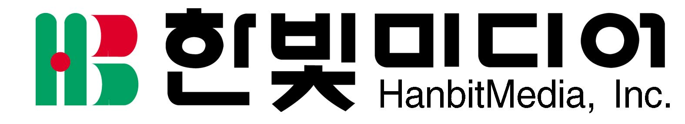
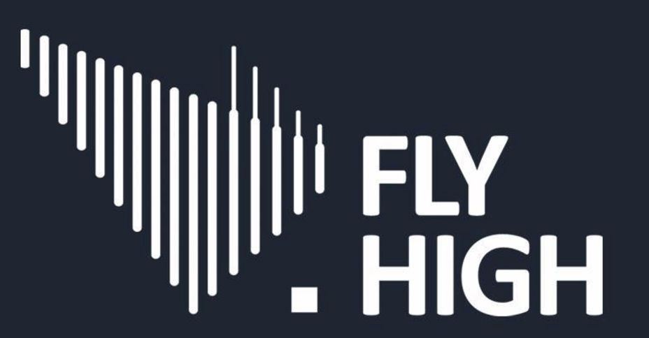
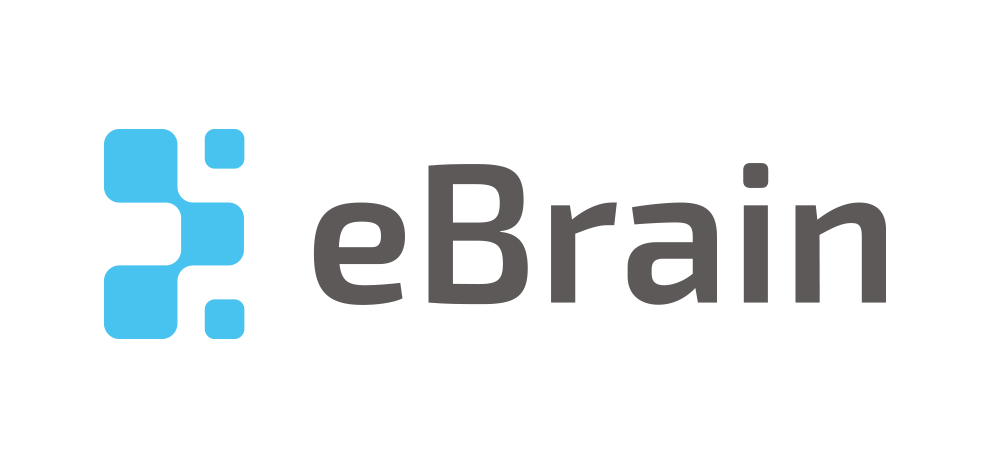
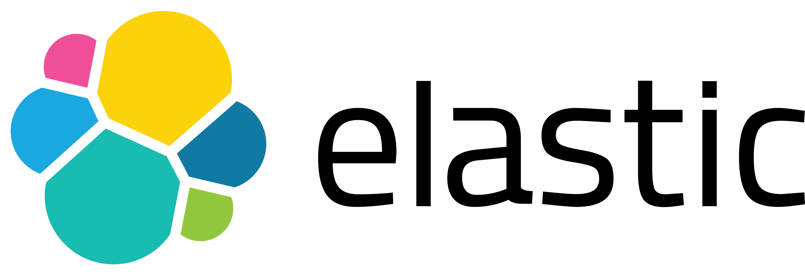
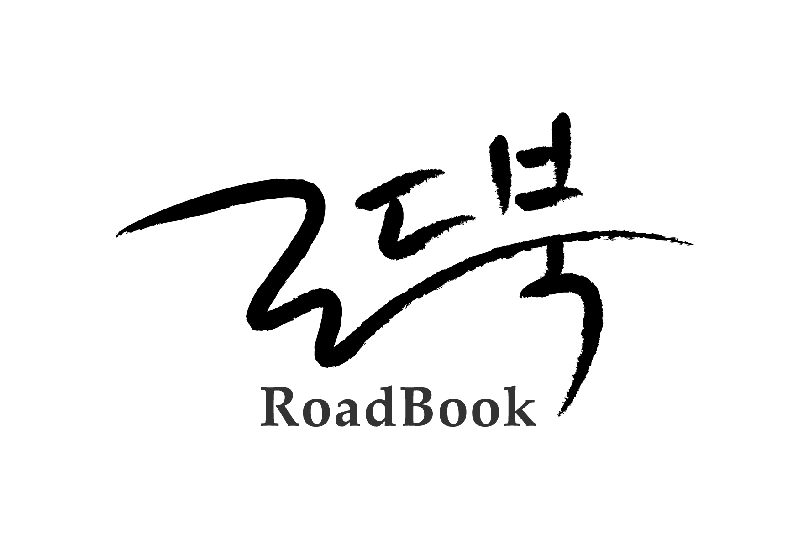
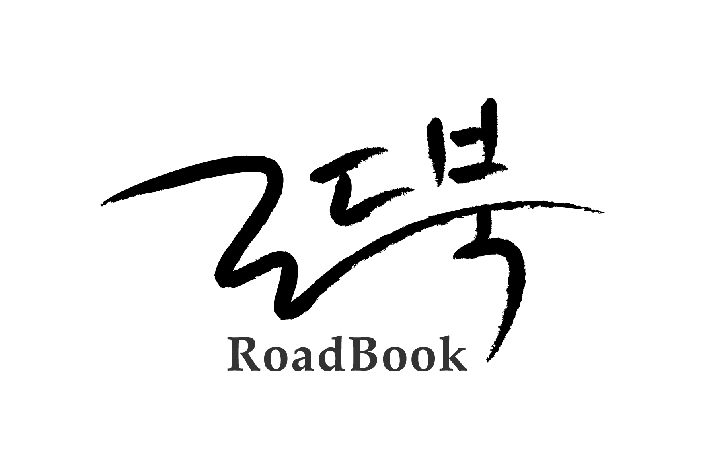
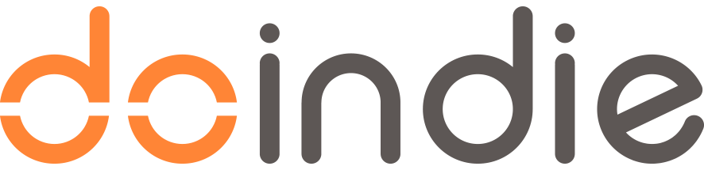

스폰서쉽
데이터 사용자들이 다 함께 즐길 수 있는
행사를 만들기 위해 도움을 주실 후원사를 모집합니다.
후원 링크
소개
데이터야놀자는 오픈소스와 커뮤니티 더 나아가 자유소프트웨어 운동을 추구하는 즐거운 데이터 축제입니다.
후원하는 기업이나 발표자보다는 참가자 모두가 즐겁게 데이터의 세상을 즐기는 작고 따듯한 축제를 민주적이고 지속가능하게 만들어가고자 노력하고 있습니다.
스폰서 모집 안내
데이터야놀자는 데이터 사용자들이 자유롭게 즐길 수 있는 행사를 만들고자 합니다. 운영진과 참가자들의 금전적인 이득 없이 운영되며, 음식, 진행 도우미, 기념품, 소정의 강사료 등의 일부를 커뮤니티와 오픈소스의 혜택을 받고 있는 기업이 부담하는 것이 맞다는 생각하여 스폰서를 모집하고 있습니다. 한편 데이터야놀자의 후원은 "상호후원" 이며, 오픈소스와 커뮤니티의 철학에 동의하는 기업만의 후원을 받고 또한 그러한 기업들을 후원합니다.
데이터야놀자는 데이터 사용자들이 자유롭게 즐길 수 있는 행사를 만들고자 합니다. 운영진과 참가자들의 금전적인 이득 없이 자원봉사 형식으로 운영될 예정이지만, 음식, 진행 도우미, 기념품, 소정의 강사료 등을 충당하기 위해 행사 스폰서를 모집하고 있습니다.
작년 혜택
- KBS 명견만리 및 여러 언론 노출
- 커뮤니티와 오픈소스 문화에 동조해 주는 기업 문화 홍보
- 인재 영입을 위한 기업 홍보 및 구직 홍보
등급별 혜택 안내
개최지와 여건에 따라 등급별 지원 내용은 다소 달라질 수 있습니다. 또한, 후원사에 의해 제공되는 튜토리얼이나 세션, 증정품은 운영진과 사전 협의가 필요합니다. 후원사 자세한 문의는 wjdcjf0219@gmail.com로 주시기 바랍니다.
등급별 비교표
| 등급 | 다이아몬드 | 플레티넘 | 골드 | 실버 | 브론즈 |
|---|---|---|---|---|---|
| 후원금 | 10,000,000원 | 5,000,000원 | 2,000,000원 | 1,000,000원 | 500,000원 |
| 티켓 지원 | 10매 | 8매 | 6매 | 4매 | 2매 |
| 후원사 로고 등재 |
홈페이지, 온/오프라인 광고물 로고 이미지 순서와 크기: 후원 금액에 비례 (PR을 보내주시면 검토 후 머지) |
||||
| 후원사 세션 | 5 ~ 10분 스피치(내용에 관해서는 사전 협의 필요합니다.) | ||||
| 부스 | 2개 | 1개 | 테이블 | - | - |
참고
- 세부 사항은 행사 전까지 다소 변경될 수 있습니다.
- 계산서 발급이 불가합니다.
- 참가자 명단은 행사 당일 동의한 사람에 한해 제공됩니다.
- 후원사 자세한 문의는 wjdcjf0219@gmail.com로 주시기 바랍니다.
후원사 목록
다이아몬드

오픈소스 컨트리뷰션에 적극적으로 나선 쿠팡, 최고의 고객 중심 기업을 지향하는 쿠팡은 차별화된 쇼핑 경험을 제공하는 대한민국 대표 이커머스 기업입니다. 외적 성장과 함께 모바일 서비스, 빠른 배송 서비스, 기술 강화 등 틀을 깨는 혁신으로 '고객을 위한 서비스'로 이커머스의 패러다임 변화를 주도하고 있습니다.
플레티넘
한빛미디어(주)는 ‘책으로 여는 IT 세.상’을 만들어 갑니다. IT 세상의 주역은 ‘우리’ 입니다. 한빛미디어(주)는 IT 세상의 주역들을 위한 프로그래밍, 컴퓨터공학, IT 에세이, Make, 리얼타임(전자책), OA, 그래픽, 나와 내 아이를 위한 실용 등 다양한 분야의 책으로 IT 세상을 만들어 가고 있습니다.
당신의 더 편리하고 행복한 미래, 새로운 플랫폼 Clova를 제안합니다. 네이버는 인공지능, 검색 기술을 개발해왔고 라인은 일본, 대만, 태국 등 아시아 국가의 메신저 시장을 갖고 있습니다. 이런 시장상황과 기술을 결합해 새로운 서비스인 "클로버"가 탄생하였습니다. WAVE, DISCO, VIEW, 네이버 클로바β 등의 제품을 만들어 가고 있습니다.

게임을 사랑하는 사람들이 모여 즐겁게 게임을 만드는 곳, 넥슨.
이 곳에서 전세계 게이머들에게 최고의 재미와 경험을 선사하기 위한 도전은 계속됩니다.
1994년 설립된 넥슨은 탄탄한 개발력과 항상 '최초'를 추구하고 실현해 낸 크리에이티브를 바탕으로 대한민국 온라인 게임 업체입니다. 1996년 넥슨의 처녀작이자 온라인 게임의 효시인 '바람의 나라'를 시작으로, 업계 최초로 부분유료화(Free to Play)라는 비즈니스 모델을 게임시장에 선보이며 새로운 가능성을 제시했습니다. 이어 '카트라이더','메이플스토리' 등 새로운 시도를 담은 우수한 게임 콘텐츠를 전세계 서비스하며 넥슨 만의 창조적인 DNA를 구축해나가고 있습니다.
골드

맨텍은 중단 없는 IT인프라를 위한 고가용성과 재해복구 솔루션을 전문으로 개발하고 기술지원 서비스를 제공하는 소프트웨어 전문 기업입니다. 맨텍은 더 나은 소프트웨어 생태계를 위해 핵심 기술들을 오픈소스로 공개하고 있으며, 공유를 통한 상호 발전에 기여하고자 합니다.

레진엔터테인먼트는 콘텐츠를 사랑하는 사람들이 모여 국내 만화 시장을 선도하는 서비스를 개발하고, 양질의 만화 콘테츠를 제작/유통하는 기업입니다. 만화 기반 원천 콘텐츠를 이용하여 소셜/영화/게임 등 다양한 미디어로 연계하고, 각각의 플랫폼에 적합하게 창조하는 글로벌 콘텐츠 기업을 만들어가고 있습니다.
실버

ZEPL은 분석 세계를 재구성하려는 열렬한 개인으로 구성된 팀에 의해 만들어졌습니다. 우리의 열정은 훌륭한 제품을 만들고 있지만 우리의 초점은 사용자입니다. Apache® ZeppelinTM을 만들고 광범위한 오픈 소스 커뮤니티와 협력하여 우리의 사명은 사일로 분석 워크 플로우를 제거하고 모든 사용자에 대해 빠르고 원활한 데이터 통찰력을 제공하는 것입니다.
Cloudera의 플랫폼은 100% 오픈 소스 소프트웨어와 개방형 표준을 토대로 비즈니스의 유연성을 높이고, 비용 관리 능력을 강화하고, 성과를 개선합니다. Cloudera는 Hadoop을 토대로 구축한 세계에서 가장 빠르고 쉽고 안전한 데이터 플랫폼을 제공합니다. 그리고 데이터를 사용하여 가장 어려운 비즈니스 문제를 해결하는 데 도움을 드립니다.
플라이하이는 다양한 방법과 형태로 보안 분야에 참여하고 있습니다.
보안이 서비스 하는데 방해물이 아니라 서비스를 하기 위해 꼭 필요한 존재임을,
보안으로 세상을 편리하게 만드는 것을 보여드리고자 합니다.
카카오뱅크의 편리하고 안전한 보안 설계에 참여했습니다."

SK주식회사 C&C의 Data Lab은 SK 주식회사의 Data 기술을 선도하는 조직으로서 자사 BigData 솔루션(브랜드명칭 : QUTA) 개발과 함께 각 사업의 Data 기반 컨설팅, 기술 지원등을 담당하고 있습니다. 텔레콤, 반도체, 정유, 금융, 의료등 다양한 인더스트리 분석 경험과 함께, 특히 자사 클라우드솔루션인 CloudZ위의 플랫폼 확장은 물론 IBM Watson 기반 Abril과의 협업을 통한 Data 기반 IT 서비스를 추진중입니다. Data의 기술과 분석 그리고 AI를 주도하는 Data Lab은 '데이터야놀자'와 같은 오픈소스 커뮤니티 활동도 적극 지지하는 Lab입니다.
브론즈

Tadpole DB Hub(테드폴허브, 올챙이)는 웹 기반의 전문 데이터베이스 협업 플랫폼 입니다. 다양한 목적을 가진 여러 사람들이 손쉽게 서로 다른 종류의 데이터베이스를 관리하고 접속하여 작업할 수 있는 직관적인 인터페이스를 제공하므로써, 데이터베이스 관리자와 개발자들이 보다 효율적으로 일할 수 있도록 도와줍니다. 또한, 이기종 데이터베이스를 사용함으로써 발생할 수 있는 불필요한 툴의 도입과 그로 인한 관리 비용의 증가를 줄여 줍니다.
ebrain은 “Tech, Career, Life”를 모토로, 소프트웨어 기술 · 인재 · 회사 · HR · 경력을 전문적으로 다루는 “Tech Talent Company” 입니다.

빅데이터 및 클라우드 플랫폼(PaaS) 전문 기업인 피보탈(www.pivotal.com)피보탈은 오픈소스 클라우드파운드리 상용 기술을 제공하는 업체입니다. 피보탈은 오픈소스 기술을 내세우며 PaaS 시장 경쟁력을 강조합니다. 피보탈은 클라우드파운더리, 자바 프레임워크 스프링 기술을 가지고 있기에 해당 오픈소스 기술의 핵심 기여자들을 대거 보유하고 있습니다. 그 덕분에 오픈소스 커뮤니티를 통해 사용자들에게 빠른 피드백을 받고 시장에서 원하는 서비스를 빠르게 구현할 수 있을 것으로 보입니다.
구글 주식회사는 미국의 다국적 기업입니다. 1998년에 'BackRub'이라는 이름으로 설립했습니다. BackRub 의 의미는 등 및 어깨 등의 간단한 마사지 이며, 해당 단어뜻 그대로 보면, 구글이 사람들에게 도움을 준다는 의미입니다. 구글은 미국 전체 인터넷 검색의 2/3, 전 세계의 70%를 장악하고 있습니다. 2008년에 구글은 자사 웹 페이지 인덱스 크기가 1조 개를 돌파했다고 발표했으며 다른 어떤 검색 엔진보다도 3배 이상 큰 인덱스를 관리하고 있습니다.
Elasticsearch는 점점 많은 문제를 해결하는 분산형 RESTful 검색 및 분석 엔진입니다. Elastic Stack의 핵심으로, 데이터를 중심부에 저장하여 예상되는 항목을 검색하고 예상치 못한 항목을 밝혀낼 수 있습니다.
온라인 협업 도구 Dooray!(https://dooray.com)는 일상 업무 및 크고 작은 프로젝트들의 협업에 필요한 이슈 관리, 메일, 캘린더, 메신저 서비스를 함께 제공합니다. 데이터야놀자 준비위원회도 선택한 누구나 쉽게 사용할 수 있는 두레이를 지금 바로 경험해 보세요.
기타 후원
도서
 


커뮤니티 협력
커뮤니티에 의한 커뮤니티를 위한 데놀자
- 데브옵스코리아
- 스사모 - 스파크 사용자 모임
- 제플린과 친구들
- 코딩이랑 무관합니다만
예술 협력
예술은 삶을 예술보다 흥미롭게 하는것


Designed by 오윤선